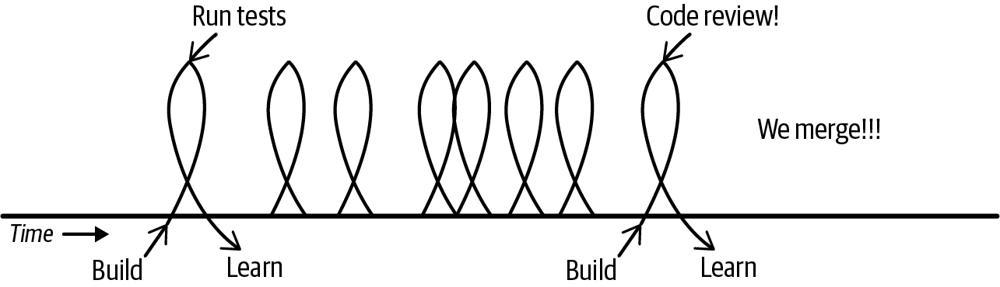
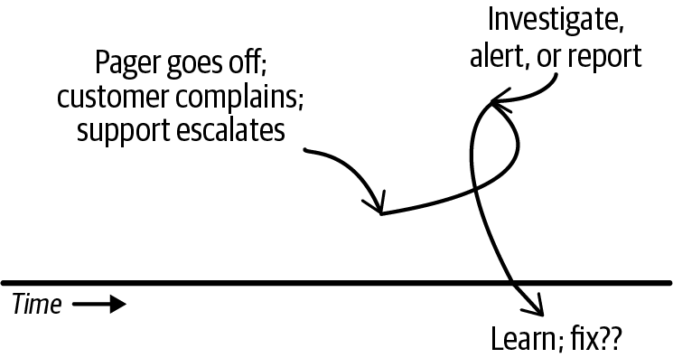
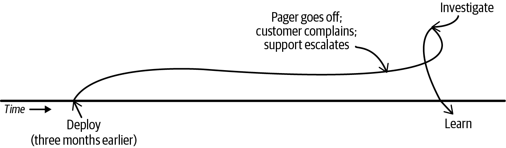
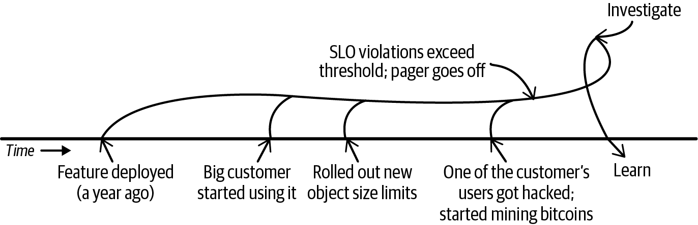
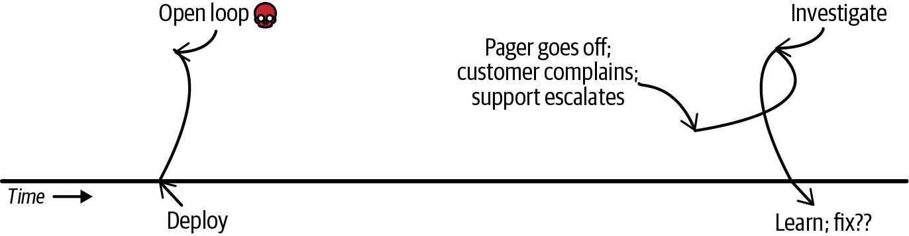
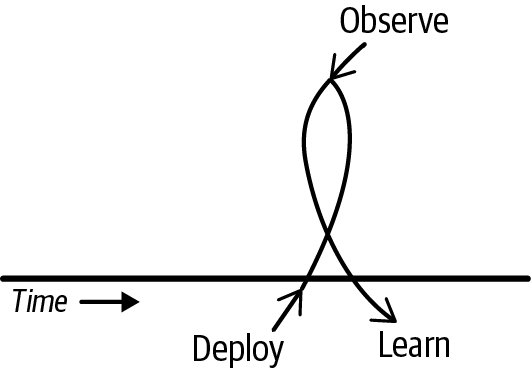
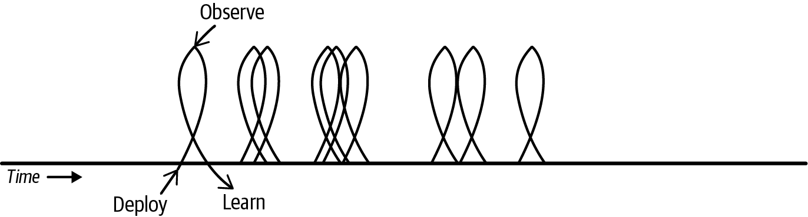
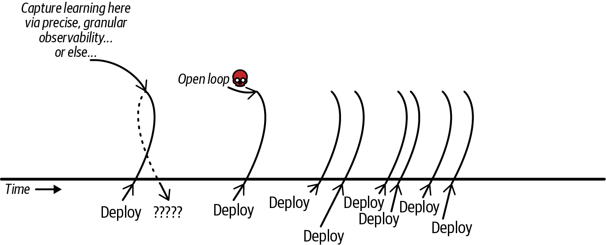
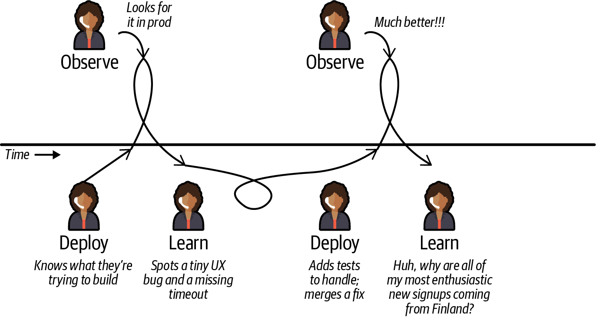

<title>第 25 章　可觀測性全景：以系統視角觀察 — 《可觀測性工程》第二版</title>
<link rel="stylesheet" href="style.css">

<nav class="chapnav">
    <a href="ch24.html">← 上一章</a>
    <a href="index.html">目錄</a>
    <a href="ch26.html">下一章 →</a>
  </nav>
<main>
  <header class="masthead">
    <span class="eyebrow">Observability Engineering · Second Edition</span>
    
    <h1 class="title serif">第 25 章<br>可觀測性全景：以系統視角觀察</h1>
    <div class="rule"></div>
  </header>

  <p>在前面幾章中，我們已經闡明了透過回饋循環加速組織學習速度的「為什麼」與「是什麼」。本章，我們要探討「如何做」。</p>
<p>放大式回饋循環可能演變成良性循環，也可能陷入死亡螺旋。平衡式回饋循環可以創造穩定性，也可能淪為混亂的震盪或僵化。決定學習與盲目摸索之間差異的，正是你如何運用這些循環，以及餵入其中的可觀測性工具所提供資料的品質。</p>
<p>我們將先探討回饋循環在多數組織中通常是如何運作的，接著把它們與真正能加速學習的回饋循環進行對比，並探討為何縮小這道落差對這麼多團隊來說一直很困難。我們會檢視兩個世代的可觀測性工具，以及每一種各自支援哪些循環，最後則探討 AI 如何一方面加速了改變的必要性，另一方面也開啟了新的工作方式。</p>
<p>本章的重點在於認清你所需要的能力，以便選擇合適的可觀測性工具。接下來幾章將在此基礎上，進一步探討商業案例、如何診斷你目前的投資，以及如何推動組織變革。</p>
<h2 class="section serif">全景之所以顯得雜亂，是因為標籤本身就很雜亂</h2>
<p>在開始之前，讓我們先談談房間裡的大象：「可觀測性」這個類別已經變得幾乎大到令人難以捉摸。它最初只是監控、日誌與應用程式性能管理（APM）攪拌在一起的產物，卻迅速擴散成一項預算項目，在某些公司甚至吃掉高達三分之一的基礎設施支出。伴隨這股成長而來的，是積極的行銷手法。這個詞如今被套用在極為廣泛的</p>
<p>各種工具與利基市場：資料可觀測性、AI 可觀測性、大型語言模型（LLM）可觀測性等等。</p>
<p>因此，許多廠商用類似的語言宣稱能達成類似的成果，儘管產品（與成果）之間其實天差地遠。對你——本書讀者以及這些工具的消費者——來說，很不幸地，這使得整個市場亂成一團，且所費不貲。容我們率先致歉：這並非我們當初提出這個術語時的本意。</p>
<p>但本節前面談到的教訓仍能派上用場。放大視野來看，系統觀點提供了一個更清晰的組織原則：與其從廠商分類或功能清單著手，不如從你需要強化的回饋迴路，以及這些迴路需要支援的決策出發。我們的目標是快速學習。</p>
<p>讓我們先來看看目前大多數組織在執行的循環，然後再來看你真正需要的循環。</p>
<h2 class="section serif">目前大多數組織在執行的循環（以及缺少的部分）</h2>
<p>儘管過去十五年來 DevOps 文化與「誰開發、誰維運」的理念盛行，但對大多數團隊而言，現實是：在開發迴圈與維運迴圈這兩大主要回饋迴圈中，只有一個真正涵蓋了生產環境。</p>
<h2 class="section serif">開發回饋迴圈</h2>
<p>軟體開發回饋迴圈速度快，但相對孤立。它是為了實作與驗證業務邏輯而優化的。各階段依序為：建置 → 執行測試 → 迭代 → 合併 → 繼續下一步，如圖25‑1 所示。</p>
<figure class="plate">
<figcaption>圖 25‑1　軟體開發回饋迴圈聚焦於本地建置、執行測試並反覆迭代，直到測試通過為止。此迴圈會持續進行，直到程式碼經過審查並合併為止。</figcaption></figure>
<p>大多數開發者的日常都圍繞著開發環境、任務追蹤器、聊天應用程式，以及少數幾個其他工具。他們反覆進行建置、執行測試、學習——一次又一次——直到部署到整合環境、手動點擊測試，然後提交拉取請求。一旦審查通過並合併，工作就完成了，接著就是下一個功能。</p>
<p>開發者知道自己的程式碼最終會部署到正式環境，但他們往往不知道確切的時間點，也不知道之後會發生什麼事。除非出現錯誤或事故，否則他們通常根本不會去看正式環境的狀況。</p>
<p>大多數組織並沒有一個能將開發者與其在正式環境中變更連結起來的反饋迴路。唯一包含正式環境學習的迴路，是屬於營運方面的迴路。</p>
<h2 class="section serif">營運反饋迴路</h2>
<p>營運團隊執行的是另一種以服務健康狀態為導向的迴路。其階段為：警報 →調查 → 修復，如圖 25‑2 所示。</p>
<figure class="plate">
<figcaption>圖 25‑2　營運反饋迴路用於保護服務健康狀態。它由警報、升級或客戶投訴觸發，接著進入分類與調查，並在修復部署完成後結束。</figcaption></figure>
<p>對於營運團隊（例如 DevOps、SRE、平台工程、雲端工程，或其他各種稱呼）而言，反饋通常來自儀表板、警報以及客戶投訴。他們通常是被動地應對，往往是在問題已經影響到客戶之後，才匆忙進行調查、學習並修復出錯的地方。</p>
<p>從這些迴路中學習的能力是有限的，因為問題的成因往往並不明顯。警報是由閾值觸發的——這代表只有在影響已經相當顯著、效能問題嚴重到足以威脅整個系統時，警報才會被觸發。有時營運迴路是由近期的部署所觸發；但更常見的情況是，客戶投訴的其實是幾天、幾週，甚至幾個月前上線的東西，如圖25‑3 所示。</p>
<figure class="plate">
<figcaption>圖 25‑3　顧客的抱怨可能與很久以前所採取的某個行動有關，使得追本溯源幾乎不可能。</figcaption></figure>
<p>當問題是由很久以前上線的變更所導致時，這種情況通常是多重條件疊加的結果。舉例來說，當某個問題潛伏了一段時間後，通常是各種條件累積疊加所致：資料量達到某個閾值而導致逾時，逾時使執行緒堆積，進而觸發警報。這就是為什麼運維循環更常見的樣貌其實比較像圖 25‑4。</p>
<figure class="plate">
<figcaption>圖 25‑4　更常見的運維回饋循環會橫跨數週、數月甚至數年。觸發警報的疊加條件，往往在導致它們的程式碼變更之後很久才會浮現。</figcaption></figure>
<p>正是在這裡，開發與運維之間的斷層變得顯而易見。運維循環的關注焦點在於錯誤（bug）、錯誤（error）、可靠性與服務中斷。這些固然重要，但可靠性只是開發人員實際需要了解自己程式碼在生產環境中表現的一小部分。</p>
<p>大多數開發人員應該提出的問題是：用戶的行為模式如何？這項功能被採用了嗎？用戶在哪個環節流失？他們為什麼會放棄使用？我們所發布的成果與我們原本的意圖是否相符？可靠性與錯誤固然是其中一部分，但並非主要重點。</p>
<p>大多數開發者不會問這些問題，因為他們沒有能夠輕鬆提出這些問題的工具。正如我們在上一章所討論的，如果好奇心受到懲罰，最終就會停止提問，而系統的不透明性便會形成自我強化的循環。</p>
<h2 class="section serif">遺失的循環</h2>
<p>所缺少的是一個一致的循環，將開發者「我寫了這段程式碼」的關注與「我可以看見並理解它在正式環境中做了什麼」連接起來。開發者循環在合併時就結束了，而營運循環要等到出問題時才開始。兩者之間的落差，正是學習速度變慢、成本不斷累積之處，如圖 25‑5 所示。</p>
<figure class="plate">
<figcaption>圖 25‑5. 在大多數組織中，開發者循環與正式環境之間並無連結：開發者循環在程式碼合併後就結束了。營運循環只有在明顯出現問題時才會開始。兩者之間的落差，正是開發速度消逝之處。</figcaption></figure>
<p>「內圈」（inner loop）與「外圈」（outer loop）有時分別用來指稱開發與維運。在內圈快速迭代並無不妥——但一旦準備將程式碼部署到正式環境，就必須跟隨它到那裡並加以驗證。</p>
<p>當開發者循環不包含正式環境時，所有的「學習」都來自測試。測試是正式環境的替代品。但任何經驗豐富的工程師都知道，當所有測試都通過時，你學到的只是⋯⋯所有測試都通過了。視測試套件的品質而定，這可能代表很多，也可能代表很少，但它永遠無法取代你在正式環境中所能學到的東西。正式環境總是會讓你意外，因為人本身就是混亂的媒介。</p>
<p>為了加速組織的學習，我們必須建立能輕鬆將開發者意圖與正式環境中的後果連結起來的回饋循環，因為那正是產生價值的循環。</p>
<h2 class="section serif">價值創造的回饋迴圈</h2>
<p>在第 23 章結尾，我們收錄了 Fin 公司技術長 Darragh Curran 的一封信，其中的結尾是這樣寫的：</p>
<p>複雜度不斷提高，但真相卻愈來愈清晰：瓶頸並不在於部署（這部分我們已經大幅優化），甚至也不在於寫程式碼（現在寫程式碼比以往任何時候都容易）。瓶頸在於理解⋯⋯</p>
<p>如果部署是你的心跳，那麼理解就是你的呼吸⋯⋯你呼吸得愈深、愈有效，吸入的氧氣就愈多。而這又會帶來更敏銳的決策、更快速的修復，以及更好的產品。</p>
<p class="fn">讓我們進一步說明。</p>
<h2 class="section serif">部署是你的心跳</h2>
<p>如圖 25‑6 所示，每次你部署一個差異（diff），就為企業創造了新的價值。這是價值創造的核心迴圈，而且可能一天之內會發生很多次。</p>
<figure class="plate">
<figcaption>圖 25‑6：價值創造的核心迴圈：部署、觀測、學習。在程式碼被部署之前，你不會創造出價值；在程式碼進入生產環境之前，你也無法開始學習。這就是為什麼大多數開發方法論都強調要頻繁地部署小差異。</figcaption></figure>
<p>正如 Darragh 所說：「部署是你公司的心跳」——所以它應該盡可能地平常、簡單、不複雜。</p>
<p>當然，這是一個理論上的迴圈。</p>
<p>這就是任何科技公司取得進展的方式：建構 → 部署 → 觀測 → 學習 → 然後把學到的東西融入到下一個建構的事物中（參見圖 25‑7）。</p>
<p>一個健康的交付系統會反覆執行這個迴圈，將學到的東西應用到每一次後續的變更中。每一次部署都是驗證假設、發現非預期結果、並精進產品行為與系統可靠性的一種方式。</p>
<figure class="plate">
<figcaption>圖 25‑7　每一次部署都是一次學習的機會。科技公司經常以交付速度為優化目標——部署、部署、再部署。</figcaption></figure>
<p>有些組織已經將此變成高頻率的習慣。舉例來說，Fin（前身為 Intercom）每天大約部署其 Ruby 單體 70 次。每次部署從合併到完全上線生產環境約需 8到 15 分鐘，並由強大且精細的可觀測性提供支援。</p>
<p>但擁有「學習的機會」並不等同於「學習」。如果你沒有進行觀測，會發生什麼事？遺憾的是，大多數公司的反饋迴圈仍然類似圖 25‑8 所示。</p>
<figure class="plate">
<figcaption>圖 25‑8　如果沒有隨著程式碼變更進入生產環境而捕捉學習，這個機會就會流失。頻繁部署並不等同於快速學習。若沒有閉合迴圈，反饋就會遺失，學習也會停滯。</figcaption></figure>
<p>每一次你部署卻沒有進行觀測來驗證，就會造成一個開放式迴圈。由於你在做出變更的同時沒有捕捉理解，學習成果就會流失。</p>
<p>你是否正在創造價值，即便你沒有去觀察它？是的⋯⋯嗯，大概吧⋯⋯老實說，誰知道呢？</p>
<p>如果你只是等待一個維運警報告訴你系統出了問題，那就等於保證你只能在問題大到威脅整個系統，或是嚴重到讓客戶抱怨時，才會知道有狀況發生。</p>
<h2 class="section serif">如何建立循環並縮小落差</h2>
<p>生產環境是一個混亂的地帶。你的系統可能每秒要在數千個服務中，為數百萬用戶處理數百萬個請求。在這種環境下，即使有一整批 AI 代理在掃描異常，用處也很有限。奇怪的事情無時無刻不在發生；奇怪的事情就是常態。你不能只靠看整個大海撈針的乾草堆，就把可採取行動的訊號從基本噪音中分辨出來。</p>
<p>但如果你確切知道自己在找什麼、發生在什麼時候，以及該往哪裡看，即使是非常微小的針——單一個奇怪的請求——只要用對工具，也能快速輕鬆地找到。</p>
<p>為了驅動真正的社會技術變革，撰寫程式碼的人必須能夠看到程式碼正在做什麼、理解用戶如何體驗它，並根據這些理解不斷加以改進，如圖 25‑9 所示。</p>
<figure class="plate">
<figcaption>圖 25‑9. 開發者將自己的意圖編碼於檢測之中，接著部署，然後在生產環境中驗證該意圖。精密工具能揭露預生產測試所遺漏的小問題。開發者加入修正、重新部署並再次檢視——並注意到一件有趣的事：新用戶註冊數正在攀升，主要來自芬蘭的用戶。他們持續探索以找出原因。</figcaption></figure>
<p>光靠一個人寫程式碼、另一個人觀察生產環境，是無法閉合這個循環的。光靠開發者瞄一眼儀表板，也無法閉合這個循環</p>
<p>高階彙總指標。而且你無法透過連接下游的運維循環來封閉開發者學習循環。</p>
<p>封閉這個循環的方式，是追蹤開發者的意圖，從撰寫或產生程式碼一路到生產環境，然後利用豐富的情境資料與精確的可觀測性工具驗證這個意圖。</p>
<p>「錯誤沒有出現尖峰」並不精確。精確的說法應該是：「在 10% 金絲雀部署與 90% 基準線相比之下，針對特定 build_id、特定 feature flag 組合以及測試用戶的請求，長字串的壓縮率上升了 5%，磁碟佔用空間下降了 30%——而回傳碼的分佈看起來沒有變化。」</p>
<h2 class="section serif">為什麼能封閉這個落差如此罕見：認知負荷的經濟學</h2>
<p>當你讀到這裡，封閉這個落差聽起來既簡單又強大。我們相信兩者皆是。然而，實際上以這種方式運作的團隊少之又少——大型組織幾乎沒有。為什麼？</p>
<p>組織通常將原因歸咎於文化因素：開發者不在乎生產環境，或是他們不使用現有的工具。一個更有用的解釋是：這些工具尚未值得投入使用它們所需的時間與精力。</p>
<p>這個產業陷入了一個循環依賴的困境：因為沒有精確的資料，開發者查看自己的變更在生產環境中的表現就不值得花這個力氣，於是他們不去查看，於是工具永遠不會變得更好。</p>
<p>我們的系統演化到可以容忍一定程度的變更速度，靠膠帶與直覺勉強維繫。舊有的做法在大多數時候都運作得夠好，因此沒有競爭壓力促使我們進行顛覆性的工具變革。</p>
<p>AI 看起來終於有可能從多個方向打破這個僵局。AI 提供了技術上的突破、競爭壓力，以及開發者必須追蹤自己的變更進入生產環境的顛覆性需求，因為這是唯一能得知非確定性代理在那裡會做什麼的方法。</p>
<p>讓我們來看看目前市場上兩個世代的可觀測性工具，以及各自設計來支援的回饋循環。</p>
<h2 class="section serif">兩種可觀測性模型，兩種回饋循環</h2>
<p>如同第一章所討論的，目前市場上有兩個世代的可觀測性工具：三支柱模型與統一模型。我們會在此簡要回顧這兩者，以及各自擅長解決的回饋模型。</p>
<h2 class="section serif">三支柱模型（為營運成果而生）</h2>
<p>三支柱模型是從監控與日誌記錄領域演變而來。它是為基礎設施而設計，工程師必須操作數百甚至數千個他們並未撰寫、也無法變更的第三方元件。你的網路設備、硬碟和容器 ID 會源源不絕地產生指標及／或日誌。</p>
<p>你對這些輸出的配置能力（或意願）有限，只需要找個便宜的地方存放它們。於是你把指標串流進指標儲存體，把日誌串流進日誌儲存體，也許再把追蹤串流進追蹤引擎。（如果你還有其他資料，例如效能分析資料、錯誤、例外狀況、異常檢測、產品分析等，也會做同樣的事。你可以看出成本暴增的原因，因為最終你會儲存許多份相同資料的不同副本。）</p>
<p>這個模型很適合基礎設施與營運循環。它主導了整合生態系，因此容易上手。而它慘敗的地方，是開發者循環。</p>
<p>為了理解每個用戶的體驗或每次發布變更的影響，開發者需要精確的資料、探索能力以及快速的回饋循環。資料點之間的關係才是資料中最重要的部分；三支柱方法在寫入時就摧毀了這些關係。</p>
<p>任何時候只要你需要跨切用戶體驗、應用程式行為或業務背景等維度，此模型的用戶就會面臨關聯上的困難。三支柱模型需要大量手動關聯與直覺跳躍。它足以應付修 bug 和事件應變，但不足以理解到底發生了什麼事、你產品的品質如何，或是用戶如何使用它。</p>
<h2 class="section serif">統一儲存模型（為開發者學習而生）</h2>
<p>第二個模型，統一儲存，是從商業智慧與 APM 工具的交集中誕生的。在這種架構中，所有訊號類型都以結構化事件日誌的形式被擷取進單一、統一的資料儲存體，通常以欄位儲存作為後盾。所有的關係都被保留下來，消除了手動關聯或在支柱之間跳來跳去的需求（見第 5 章）。</p>
<p>欄位儲存引擎同時支援高基數與高維度（於第 1 章定義），因此能夠支援非常精確的問題。</p>
<p>精確度是背景脈絡豐富度與基數的函數。背景脈絡之美在於它讓資料的威力呈指數、組合式地增長。假設你的單一追蹤或標準事件上有 29 個欄位，當你再加入第 30 個欄位，這第 30 個欄位的威力會超過前 29 個加總，因為你現在能夠產生指數級增長的維度細節組合與子集。</p>
<p>我們對這些事情直覺上就能理解。高基數識別碼「Patrick Snuffleupagus」比單純的「男孩」更具識別性,而兩者若脫離情境脈絡都沒有價值。</p>
<p>這種模型非常適合用來理解應用程式程式碼的品質與行為,以及每位用戶的體驗。它支援開發者的反饋循環（部署 → 觀察 → 學習）。其靈活性與速度讓問題能快速轉化為反饋循環。這種模型在把部署轉化為開發者學習方面表現得特別出色。</p>
<p>統一模型在回答探索性、開放式的問題時特別出色,例如「顯示所有啟用feature flag X 的歐盟行動裝置用戶，在結帳流程中發生錯誤的請求」。這類問題用三大支柱模型是不可能即時提出的。</p>
<p>統一模型較弱的地方在於營運基礎設施監控。它能做一些這方面的工作，但表現並不出色。</p>
<h2 class="section serif">AI 改變了遊戲規則，開啟了新的互動模型</h2>
<p>在撰寫本文之時，軟體開發生命週期（SDLC）正經歷一段壓縮的變革期。程式碼生成的新模式與新哲學似乎每天都在出現。雖然我們還不知道未來將走向何方，但可以概略辨識出一些模式。</p>
<p>AI 顛覆了軟體開發的經濟結構。過去撰寫程式碼對許多組織而言是最耗時、最昂貴的部分；如今幾乎是免費的。限制因素已從「程式碼產出」轉移到「程式碼一致性」。我們產出成品的速度，遠比我們能夠理解這些成品的速度快得多。</p>
<p>瓶頸已經從產生程式碼轉移到驗證程式碼。生成是便宜的；信心卻不是。在一個大多數程式碼都可拋棄、可重新生成的世界裡，程式碼的功能更像是一種快取。而世界上大多數的程式碼並非綠地（greenfield）程式碼，而是棕地（brownfield）或黑地（blackfield）程式碼 [1]，其中生產環境是開發者意圖僅存的殘破遺跡。若要讓這些程式碼變得可重新生成，就必須先完成跨越，這將在第 2 章討論。</p>
<p>如今，有遠見的工程領導者正在為團隊跨越到生成式工作流程奠定基礎，同時也在處理已經浮現的問題。其中最迫切的是：當軟體變化的速度超過組織能夠理解其後果的速度時，風險累積的速度就會超過解決的速度（或者程式碼根本不會被審查）。學習反饋循環因而成為限制性的資源。</p>
<p class="fn">1 「黑地開發」一詞指的是極度混亂的棕地專案，好比在沒有光源的黑暗洞穴中摸索前進。</p>
<p>AI 能大幅減少甚至消除開發人員在試圖讓基礎架構／維運工具符合自身使用情境時所遇到的摩擦，而 MCP（模型上下文協定）或許也具備某種能力，可以跨越各支柱、汲取出洞見。2 AI 可以將資料直接傳送給開發人員，透過他們的開發環境或 Slack 交付。</p>
<p>最終，開發迴圈中的大部分痛點，最好的解法將會是代理式工作流程。開發者可以宣告意圖、撰寫或產生程式碼來實現它、測試它、部署它，並在正式環境中驗證該意圖是否達成。代理可以負責那些繁瑣的工作，例如隨時間反覆回頭檢查，每小時、每天或每週都巡視一次，讓即使是緩慢累積的問題（例如記憶體洩漏、快取漂移）也能在其嚴重到足以威脅系統、進而觸發維運警報之前就被找出並修復。</p>
<p>這也可以與另一種互補的做法形成對比：對抗式的「持續審查」代理，會做諸如標記潛在記憶體洩漏、檢查系統的重要限制是否有被遵守等事情。無論接收回饋的對象是不是人類，更快的回饋迴圈都是這裡貫穿一致的主題。</p>
<p>這不僅僅是為了方便；它是一種能減少循環摩擦、加快學習速度的結構性方法。實現這些的要素如今已經齊備，但需要一個非常明確的技術基礎：統一、結構化、具有高情境資訊的事件，讓 AI 能夠據以推理。而商業智慧的做法正是讓這些成果得以實現的關鍵。</p>
<h2 class="section serif">兩種回饋循環都很重要：先從正確的那個開始</h2>
<p>運維回饋循環是不可或缺的安全機制。它們監控你的基礎架構、追蹤系統整體健康狀況，並確保你達成 SLO。這是了解基礎架構健康狀況的主要方式，也是攔截那些逃過測試、預備環境與漸進式部署、足以威脅整個系統的重大問題的安全網。</p>
<p>但這些機制不能是開發者了解自己改動造成何種影響的唯一途徑——如果你想以現代競爭所要求的速度進行開發，就不能只靠它們。</p>
<p>營運回饋迴圈是下游的、延遲的，且是圍繞著威脅系統運作的狀況而建立的。它們是由客戶抱怨和系統故障所驅動。等到營運迴圈啟動時，用戶已經受到影響，而你的團隊也已經進入被動應對模式。</p>
<p>面向開發者的可觀測性將學習過程向上游推移——朝向預防、迭代與產品品質邁進。開發者回饋迴圈讓你能夠看見問題正在形成，</p>
<p class="fn">2 迄今為止的報告好壞參半，但有強力證據顯示，代理程式本身會主動尋求連結脈絡完整、內容更豐富的上游資料，而不是日誌與指標。</p>
<p>主動了解使用者體驗，並在使用者發現之前，驗證你的程式碼確實符合你的預期。這正是預防與治療之間、以及持續學習與從災難中學習之間的差異。</p>
<h2 class="section serif">針對你要打造的成果達成共識</h2>
<p>可觀測性的產業版圖確實令人眼花撩亂。數百家可觀測性廠商中，有許多除了定價和包裝方式不同之外，功能上其實大同小異。其他廠商則在底層技術上有著顯著且根本性的差異。身為客戶，很難分辨其中差異，因為廠商，該怎麼說呢，「在銷售過程中並不受限於技術上的準確性」。</p>
<p>但你不需要一開始就蒐集詳盡的功能比較，或進行繁複的產品評比。更有效的起步方式，是讓領導階層針對一個問題達成共識：你的瓶頸究竟是開發（dev）還是維運（ops）的反饋迴圈？</p>
<p>如果你的痛點在於維運穩定性——維持系統運作、掌握基礎設施的可見性、管理混亂的事件應變——那麼為維運成果所打造的工具，就是正確的起點。三大支柱模型已相當成熟、穩健，且專為基礎設施及其他維運使用情境而設計。</p>
<p>如果你的痛點在於交付速度——也就是說，你需要迅速且有信心地出貨，並理解每位客戶所體驗到的產品品質——那麼為開發者學習所打造的工具，才是你該起步的地方。統一儲存模型正是為此而生。</p>
<p>如果你的痛點是來自於前所未有的大量 AI 生成程式碼湧入、卻無人真正理解，或者你正準備從手工打造的匠人式程式碼轉型為由 AI 撰寫並審查的程式碼，又或者你需要在正式環境中追蹤代理式（agentic）工作流程，那麼你也應該把重心放在開發者學習上。</p>
<p>並沒有一個放諸四海皆準的正確起點。然而，大多數組織的現況是：他們在維運端的回饋循環上投入了大量資源，但在開發者端的回饋循環上投入極少。這種情況相當矛盾，因為維運循環原本應該只是一張安全網，而不是組織學習的主要驅動力；一旦系統達到穩定狀態，維運端每多投入一分邊際成本，回報就會迅速遞減。</p>
<p>用運動比賽來比喻，大多數組織把家底都砸在守門員身上。他們甚至沒有幫場上其他位置配置人手，卻不斷給守門員加碼投入。然後他們還納悶，為什麼球隊就是進不了球。</p>
<p>大多數組織同時需要維運端的回饋循環，也需要開發者端的回饋循環。但在建立商業論證之前，你必須先就「你到底想解決什麼問題」以及「哪一個回饋循環才是問題的核心」達成共識。若缺乏這種共同的理解，即使投入再多資源，也依然無法</p>
<p>要產生有意義的社會技術性變革。可觀測性的領域很複雜，但真正重要的回饋循環並不複雜。就從那裡開始吧。</p>
<h2 class="section serif">結論</h2>
<p>在本章中，我們排除了可觀測性領域的雜訊，聚焦於其核心目的：透過回饋循環加速組織學習。我們指出，多數組織的現實情況，是快速、孤立的開發循環與緩慢、被動的維運循環之間存在關鍵落差。若僅仰賴維運端的回饋來取得正式環境的學習成果，就會錯失價值創造所需的持續學習。</p>
<p>如果你想以 AI 的速度來建構系統，你也需要以 AI 的速度來學習與驗證。這代表每次變更之後，都要透過開發者回饋循環從正式環境中學習。所幸，AI 不僅正在推動這些能力的需求，也同時驅動了能實現這些能力、並大幅降低認知負荷的新工作流程。</p>
<p>在接下來的章節中，我們將進入實務層面──涵蓋可觀測性的商業論證、如何評估目前的投資、如何推動組織變革、何時該自行建立或採購，以及如何建立穩固的供應商合作關係。所有這些實務步驟，都仰賴你先清楚釐清自己想達成的目標。</p>

  <footer class="colophon">
    <span>《可觀測性工程》第二版 · 第 25 章</span>
    <span>可觀測性全景：以系統視角觀察</span>
  </footer>
</main>
